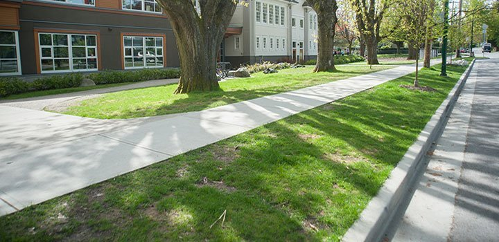

Speed Humps

Speed humps are a traffic calming measure used to reduce vehicle volume and speed on local streets.
Pictured:Lord Kitchener Elementary , W 24th Ave between Collingwood St and Blenheim St.
Barriers

These low-gravity concrete barriers regulate traffic flow and discourage U-turn activity.
Pictured:Eric Hamber Secondary , Willow St at W 35th Ave.
New Sidewalks and Curbs
Sidewalk segments address gaps in the walking network. Sidewalks and curbs provide a continuous walking experience separating people from traffic.
Pictured:Lord Kitchener Elementary , Collingwood St between W 24th Ave and W King Edward Ave.
Curb Ramps
Curb ramps and bus pads improve accessibility for people using wheelchairs, walkers, and strollers.
Pictured:Sir Sandford Fleming Elementary , Lanark St at E 47th Ave.
New Marked and Raised Crosswalks

Crosswalks alert people driving to expect people walking. Raised crosswalks reduce vehicle speed and increases pedestrian visibility.
Pictured:Thunderbird Elementary, Cassiar St at Hermon Drive.
Rapid Flashing Beacons
These high intensity amber flashing beacons installed at crosswalks, activated by a pedestrian push-button. The beacons increase pedestrian visibility and alert people driving to yield at marked crosswalks.
Pictured:Renfrew Elementary , Cassiar St at E 22nd Ave.
Pedestrian Crossing Improvement
Countdown timers show how much time is left to cross the street at an intersection. This reduces the number of people crossing the intersection when the light changes.
Pictured: Blenheim St at W King Edward Ave.
Signage

Clarifies pick-up/drop-off operations, indicates various parking regulations, and improves sight-lines.
Protected Bicycle Lane

On-street bike facility physically separated from motor vehicles. Can be elevated or protected by various treatments such as a curb, median, and/or bollards.
Pictured: Eric Hamber Secondary , Willow St between W 33rd Ave and W 35th Ave
Bus Pad
Improves access for people using wheelchairs, walkers, and strollers to get to the bus waiting area.
Pictured: Carnarvon Community Elementary , W 16th Ave at Balaclava St.